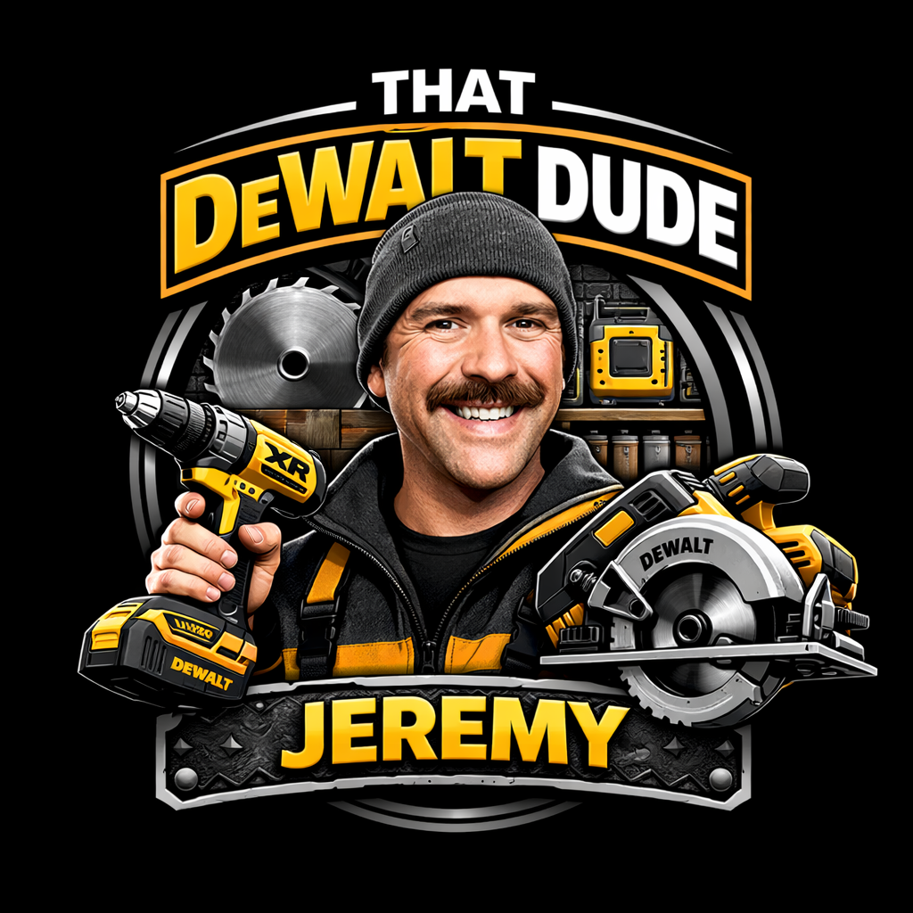
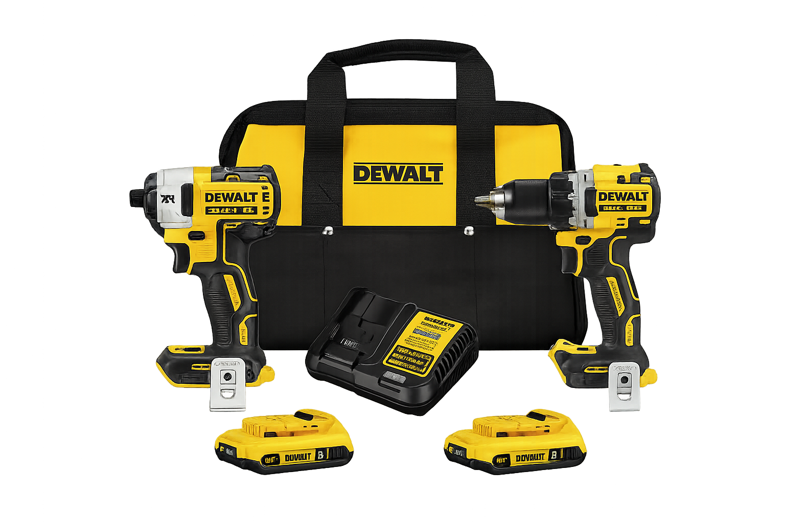
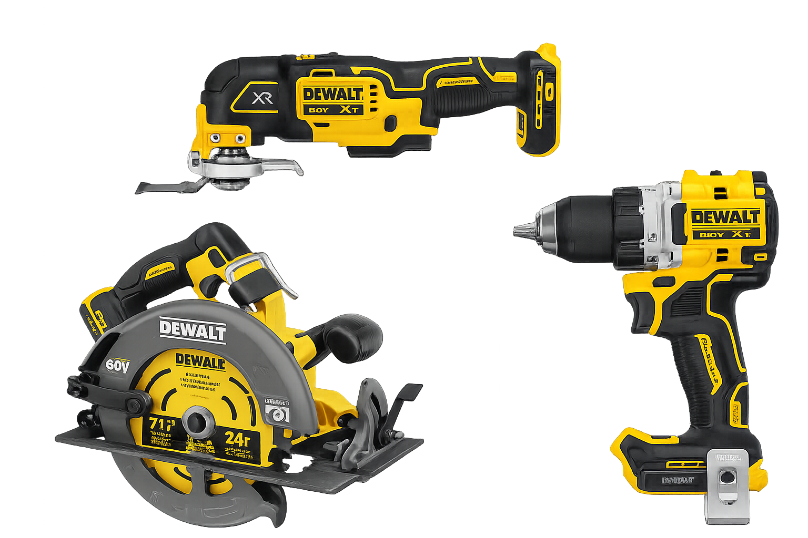
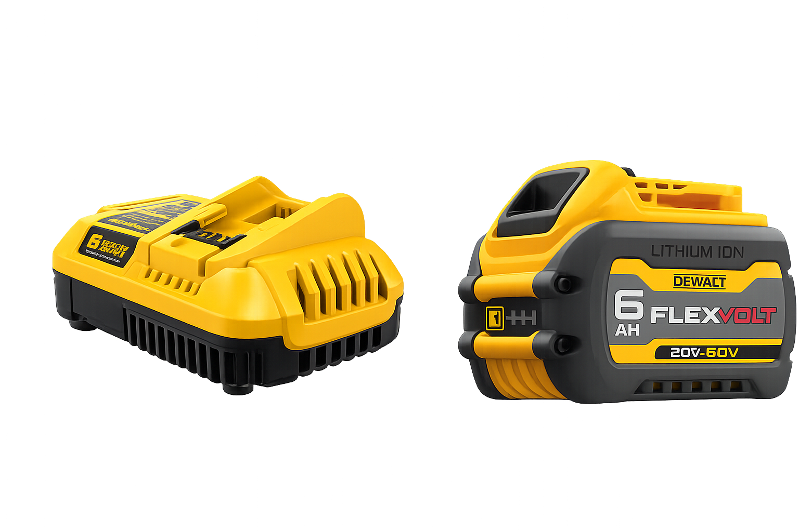

That DeWalt Dude
Real DeWalt tools I use for home renos, workshop projects, and DIY jobs.

Best DeWalt Starter Kit
Bag, charger, batteries, XR drill, and XR impact driver.

My Top 3 DeWalt Tools
The drill, saw, and oscillating tool I’d buy again.

Best Batteries & Chargers
The add-ons that keep the tools running and ready.
First post
That DeWalt Dude Picks
My Top 3 DeWalt Tools Right Now
These are three of my most-used DeWalt tools for real home renos and workshop jobs. No fluff, just the ones I actually reach for.
Best accessories
Power & Essentials
Best Batteries, Chargers & Extras
If you’re building out a DeWalt setup, the tools are only half the story. Good batteries and a proper charger make the whole setup more useful.
Some links may be affiliate links. I may earn a small commission at no extra cost to you.